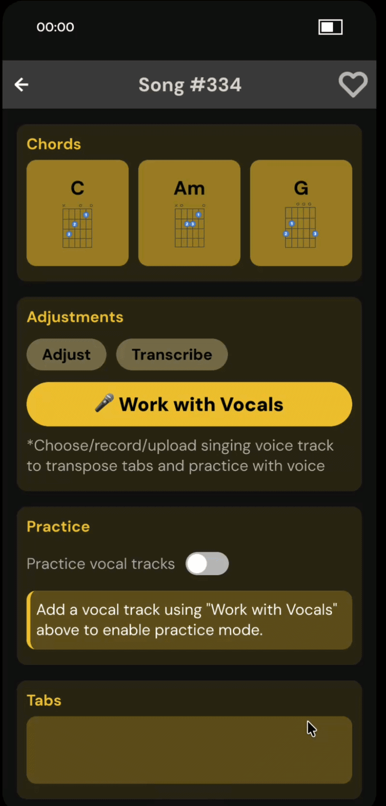
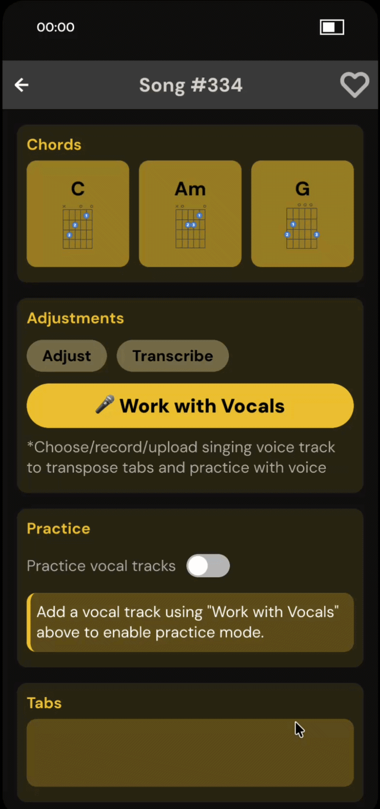
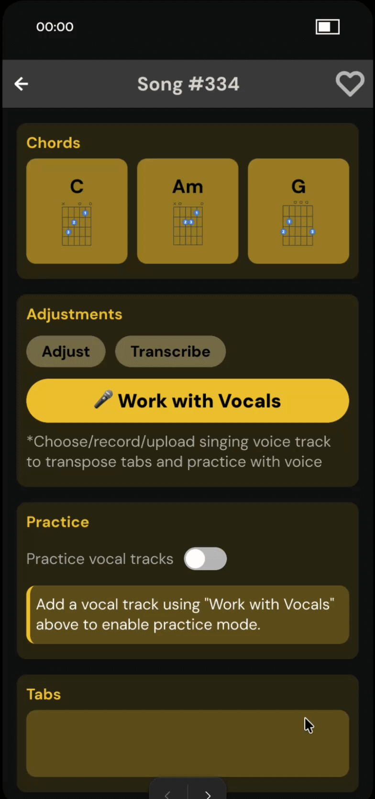

A new feature for Ultimate Guitar that bridges the gap between learning guitar and singing — letting users match their vocal pitch to their tabs automatically.
Ultimate Guitar is the world's largest guitar learning platform — but like most guitar apps, it treats the instrument in isolation. The moment a learner tries to sing along or play with a vocalist, they hit a wall the app was never designed to help them through.
This feature was designed for two specific users: the beginner guitarist who is also learning to sing, and the guitarist who wants to play alongside a vocalist in a band setting. Both share the same core problem — there is no bridge between learning guitar and using it in a musical context with a voice.
Has no pitch reference. Doesn't know if their voice is in the right key. Feels anxious about singing and playing simultaneously. Needs scaffolding and clear feedback at every step.
Needs to transpose songs to match their singer's range quickly. Currently does this by ear or gives up entirely. Needs pitch-sorted tools and fast, efficient context-switching.
Research began with a contextual inquiry — observing and interviewing guitar learners in their natural practice environments. Participants were watched as they used Ultimate Guitar, tried to sing along, and attempted to coordinate with other musicians. Key moments of friction were documented and grouped using affinity diagramming.
Four major themes emerged from the affinity clusters. Each became a direct design constraint shaping the architecture of the feature.
What feels obvious to an experienced musician is opaque to a beginner. The pitch detection screen was given step-by-step instructions because experts routinely skip steps they've forgotten were hard.
Tabs automatically update when a vocal track is applied so the information reorganizes itself around the learner's actual task, rather than forcing a mental translation between two keys.
Chord diagrams, written tabs, and an audio vocal reference track appear on the same screen. Multiple formats for the same content reinforce each other and deepen retention.
An "Updated" pill and a full summary screen after applying a vocal track ensure users always know what changed and that the system responded to their action.
The pitch legend is shown before the track library list. Users see what badges mean rather than needing to remember it from a tooltip two screens back.
The mid-fi prototype was designed in grayscale to establish hierarchy through luminance and spacing before color is introduced — ensuring the layout works structurally first.
The process began with a hand-drawn storyboard mapping the complete flow — from the song detail view on Ultimate Guitar, through the vocals menu, into pitch detection or track selection, and back to the song with the vocal track applied.
Early mid-fi versions made vocal setup the visual centerpiece of the song screen. Three structural changes were made before moving to Figma:
The high-fidelity prototype was built in Figma, adopting Ultimate Guitar's visual language — warm amber tones, dark backgrounds, and clear typographic hierarchy. It covers the complete vocal track setup flow across all three entry points.
The "Work with Vocals" button was made significantly more prominent in color and weight to direct attention, while keeping all other original page elements intact to maintain alignment with Ultimate Guitar's existing design.

The "Work with Vocals" CTA was made visually dominant using Ultimate Guitar's amber accent color. A go-back prompt was added after tapping other buttons — but no user ever triggered it during testing, validating that the color hierarchy successfully directed attention to the right action.
Five users tested the mid-fidelity prototype in a contextual inquiry format. A clear theme emerged: the feature was useful once understood — but the path to understanding it was unclear.
The feature was a bit difficult to navigate, but the addition of chord charts was extremely helpful for a guitar learner.
The emphasis on voice adjustment could be reduced — more focus should go to the tabs, which are the main content during playing.
Liked the UI, but needed help understanding what to do right after recording their voice.
The interface design and flow were effective together — improvement for feedback detail would be helpful in the final screen.
The voice feature is helpful, but needs further explanation as to why it's needed — more useful for guitar learners with specific needs.
The "Work with Vocals" menu on Ultimate Guitar offers three distinct entry points, each targeting a different user need and comfort level.

The user sings a note into their phone microphone. Ultimate Guitar detects their singing pitch and automatically transposes the tabs to match. Designed for beginners who don't know what key to transpose to — they just sing and the app figures it out.
Browse pre-existing vocal tracks sorted by pitch from low to high. Once selected, tabs transpose automatically. Designed for band players who want to quickly match a song to their vocalist's known range without using the microphone.

Upload an audio file from the device or record live in the app. Ultimate Guitar detects the pitch and transposes the tabs to match. Built for users who already have a reference vocal and want to practice directly with it.
Complete vocal track setup flow for Ultimate Guitar — pitch detection, track library, and recording — with automatic tab transposition.
Open Final Prototype → View Mid-Fi (HTML)